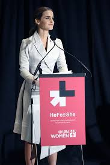

Referentes
Margaret Fuller (EEUU, 1810-1850)
"Si me preguntas qué oficina deben llenar las mujeres, contesto: 'cualquiera …; serán capitanes de mar, si quieren'. No me cabe duda de que hay mujeres bien equipadas para tal oficio". Margaret Fuller fue la primera periodista mujer en una redacción de los Estados Unidos.
Fuller fue una de las precursoras del feminismo y de la educación de las mujeres. Abogó por el sufragio femenino, por reformas sociales, penitenciarias y por el fin de la esclavitud.
En julio de 1843 publicó La mujer del siglo XIX, donde examina su rol dentro de una sociedad atravesada por fuertes paradigmas patriarcales. Fuller discute sobre la necesidad de una igualdad de derechos entre hombres y mujeres para que ese amor sea lícito, no solo "ante los ojos de Dios", sino ante la sociedad.
Emmeline Pankhurtst (Reino Unido, 1858-1928)
Emmeline Pankhurst fue una activista política, cuyo trabajo fue fundamental para conseguir el derecho a voto de las mujeres en Inglaterra en 1928. Pankhurst era una destacada líder del sufragismo, el movimiento que defendía que las mujeres pudieran votar a principios del siglo XIX.
En 1903 fundó la Unión Social y Política de las Mujeres (WSPU) para presionar a los partidos políticos para que votasen a favor del sufragio femenino.
Virginia Woolf (Reino Unido, 1882-1941)
Además de ser una de las figuras literarias más destacadas del siglo XX, Virginia Woolf también es considerada una pionera del feminismo. En una época en la que las mujeres dependían siempre de un hombre en la familia (padre, hermano, marido), ella se rebeló contra las convenciones sociales para impulsar su vocación como escritora.
En sus obras reflexiona sobre la identidad femenina y sobre las dificultades a los que se enfrentan las mujeres por el hecho de serlo en un mundo dominado por los hombres.
Frida Khalo (México, 1907-1954)
Fue una conocida artista mexicana que ha acabado convirtiéndose en símbolo del feminismo, del arte e incluso de la moda. Su pintura muestra a mujeres reales, lejos de la belleza y los estereotipos en los que se centraban los artistas de su época.
A principios del siglo XX, la mujer jugaba un papel secundario en la sociedad: no podía aspirar a mucho más que casarse y tener hijos. Sin embargo, Frida Kahlo fue capaz de romper cánones. A pesar de tener una salud débil y un cuerpo muy frágil, intentó ser fuerte, independiente y hacer su propia vida sin que le importara lo que dijeran.
Emma Watson (Francia, 1990)
Uno de los secretos de que Emma Watson sea quizás la feminista más famosa de este tiempo es que no se deja llevar por la radicalidad. Sus seguidores ven coherencia en sus discursos porque la actriz, de manera inteligente, sabe que el feminismo es mal entendido por muchos como una forma de “odio” a los hombres. Por ello ella habla de igualdad, de que ningún sexo tenga más oportunidades por su condición de género. Es entonces cuando muchos han tenido interés en escuchar.
Emma Watson dejó asombrado al mundo con el discurso que pronunció en su campaña de la ONU Mujeres “He for she”, en 2014. Ese fue el año en que su carrera como filántropa e icono despegó, el día en el que el mundo se dio cuenta de que Emma Watson sería recordada por mucho más que por su papel de Hermione.
Fue nombrada Embajadora de buena voluntad de ONU Mujeres en junio de 2014.
Malala Yousafzai (Pakistán, 1997)
Malala es una estudiante, activista y bloguera pakistaní.Su desgarradora historia es ya conocida mundialmente y ha hecho abrir los ojos a la sociedad. Malala es conocida por su activismo a favor de los derechos civiles, especialmente de los derechos de las mujeres en el valle del río Swat, Pakistán, donde el régimen talibán prohibió la asistencia a la escuela de las niñas. Debido a su lucha, el 9 de octubre de 2012 en Mingora, fue víctima de un atentado perpetrado por un grupo terrorista vinculado a los Talibanes. Pero lejos de asustarse, Malala sigue luchando hoy en día por los derechos de las mujeres pakistaníes.
"La palabra feminista es un poco difícil. Cuando la oí por primera vez, escuché connotaciones negativas y unas cuantas positivas. Dude si definirme o no como una feminista. Pero luego escuché tu discurso y me di cuenta que no hay nada de malo en definirme como feminista. Así que sí, soy feminista y todas deberíamos de serlo porque la palabra feminismo no es otra cosa que igualdad".